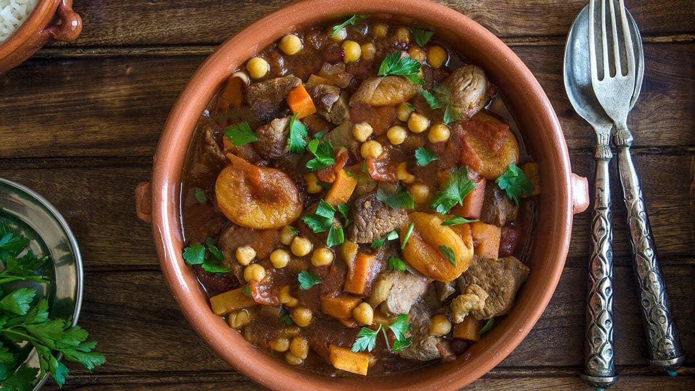

Jollof Rice

A beloved West African dish made with rice, tomatoes, and spices. Tomatoes and scotch bonnet peppers give it a unique flavor.
Cooking Instructions
- Sauté onions, garlic, and peppers.
- Add tomatoes and cook down.
- Stir in rice, broth, and spices. Simmer until done.
- 2 cups rice
- 1 can tomatoes
- 1 onion
- 2 scotch bonnet peppers
- Spices: thyme, curry, bay leaf
Nutritional Facts (per serving)
| Calories | Carbs | Protein |
|---|
| 350 | 60g | 6g |
Moroccan Tagine

A slow-cooked stew with spices, vegetables, and meat, cooked in a traditional clay pot.
Cooking Instructions
- Brown meat and onions in oil.
- Add spices, vegetables, and broth.
- Simmer in tagine pot until tender.
- 500g lamb or chicken
- 2 onions
- Carrots, potatoes
- Spices: cumin, coriander, cinnamon
Nutritional Facts (per serving)
| Calories | Carbs | Protein |
|---|
| 400 | 30g | 20g |